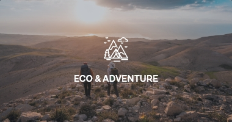
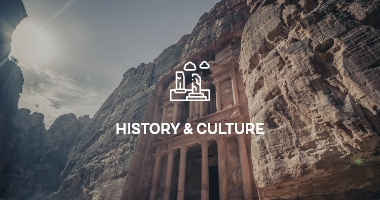
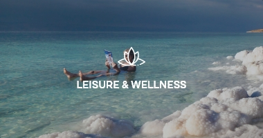
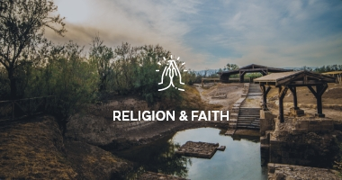
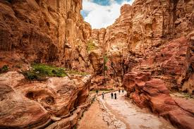
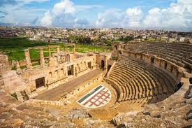
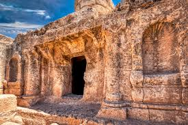

Discover the ancient wonders, vibrant culture, and breathtaking landscapes of Jordan.
From the rose-red city of Petra to the bustling streets of Amman, your adventure starts here.
Join us in exploring the hidden gems of the Middle East.

Jordan offers premier eco and adventure experiences, featuring dramatic desert landscapes, deep canyons, and diverse biodiversity. Top activities include hiking the 675km Jordan Trail, desert trekking and stargazing in Wadi Rum, canyoning through water-filled wadis like Wadi Mujib, and exploring protected areas such as Dana Biosphere Reserve.

Jordan is an ancient land bridging Asia, Africa, and Europe, with history spanning from Nabataean rock-cut cities (Petra) and Roman ruins (Jerash) to biblical sites. As an independent Hashemite Kingdom since 1946, its culture is rooted in Arab-Islamic traditions, deeply valuing hospitality (especially Bedouin) and preserving a rich mosaic of cultural heritage.

Jordan is a premier leisure and wellness destination in the Middle East, seamlessly blending ancient history, dramatic landscapes, and natural therapeutic sites with world-class, modern spa resorts. The kingdom offers a holistic escape designed to rejuvenate mind and body through its unique geography and cultural experiences.

Jordan is a predominantly Sunni Muslim country (over 95% of the population) with a small, deeply rooted Christian minority. Islam is the state religion, heavily influencing social life and culture, yet the constitution guarantees freedom of worship. Jordan is renowned for interfaith harmony and hosts significant Biblical, Abrahamic, and Islamic holy sites.

The Jordan Trail is a ~675km long-distance hiking route traversing Jordan from Um Qais in the north to Aqaba on the Red Sea in the south.Completed in roughly 35–40 days, the trail crosses diverse landscapes—including northern forests, rugged wadis, Petra, and Wadi Rum—while passing through 75 villages to showcase local culture, cuisine, and history.
View Details
Jerash, located 30 miles north of Amman, houses one of the world's best-preserved Roman provincial cities. Known as "Pompeii of the East," the ruins feature a colonnaded Oval Plaza, two massive theaters, the Temple of Artemis, and the 800m-long Cardo Maximus, all buried by sand for centuries until.
View Details
Ma'in Hot Springs (Hammamat Ma'in) are natural thermal mineral waterfalls and springs located in Jordan, 264 meters below sea level near the Dead Sea. Renowned since Roman times, these, hot, therapeutic waters (up to 63°C) cascade down cliffs, offering a premier spa and wellness destination.
View Details
The Cave of the Seven Sleepers is a religious and historical site, prominently located near Amman, Jordan (Al-Rajib) and Ephesus, Turkey, associated with a miraculous tale in both Islamic (Surat al-Kahf) and Christian traditions. It tells of young men who slept in a cave for over 300 years to escape persecution.
View Details